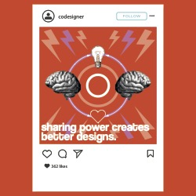

So, Co-Design Is...?:
Power Differentials and Co-Design.
An Essay I wrote for Co-Design I, Visual below.
Co-design is often used as an umbrella term for participatory, co-creation, and open design processes (Awatea, 2022). This was the extent of my knowledge surrounding co-design - the first definition you are presented when you type ‘co-design’ into a search engine. Upon examination of the term, you can establish a similar understanding of co-design without the use of google. ‘Co’, meaning collaboration, and design. Collaboratory design. But this is about as much as I, rather naively, believed co-design to be. I didn’t question the collaborations - are there only designers involved, or are they working with a client? If so, how does a client fit into the dynamic? My assumption was simply that co-design was about working together. I think up until now the utter necessity of client involvement wasn’t obvious to me; before university I was creating brands and ideas for a make-believe client, someone I created in my head to fit high school marking rubrics. Initially I found I was being taught to be independent in my work; design is a competitive field and I’m better off designing by myself than with others. I feel that within design it’s really easy for power imbalances to be formed because of a ‘holier than thou’ attitude that accompanies the ‘every man for himself’ teachings of design. Finding the best way to address the power differentials within collaborative design is something that I think needs to become more common as a design practice, and is a fundamental part of co-design. But how exactly does co-design acknowledge power imbalances within design? How can the implementation of co-design create positive change in the industry?
Designer Kelly Ann McKercher states “co-design is about challenging the imbalance of power held by individuals, who make important decisions about others lives, livelihoods, and bodies”. Traditionally, a designer might hear a client’s initial qualms and then use what they already know about the issue to resolve the problem. This cannot create the best possible outcome because the designer doesn’t have a full understanding of the client's wants and needs.
Sharing Power is a principle of co-design. When differences in power are unacknowledged and unaddressed, the people with the most power have the most influence over decisions, regardless of the quality of their knowledge or ideas (McKercher, 2020). McKercher’s beliefs align with my initial expectations. They understand and acknowledge the need for change in the design field when it comes to power differentials, and describe the role co-design can play in encouraging that change. McKercher describes six mindsets for co-design in their book Beyond Sticky Notes: Doing Co-design for Real. I’ve found that two of those mindsets best assist my ideas in a more complex, developed way. Elevating Lived Experience and Valuing Many Perspectives both support the idea that in order to create the best possible design it is important to have a diverse group of people who have lived experiences that align with your design that work with you every step of the way. Diverse views help us to find the systemic causes of issues and identify overlooked resources, as well as see old issues in new ways (McKercher, 2020). So, how exactly does co-design acknowledge power imbalances within design? McKercher believes we need to “experience the mindsets, practise them, and help others to do the same” in order to create a more progressive designer. A designer needs to be committed to elevating the voices and perspectives of those most involved in the topic throughout every part of the process, so that the imbalance of power held by individuals can be challenged, and the power can be evenly dispersed, ensuring decisions made about other peoples’ livelihoods don’t become the responsibility of an individual.
Collaboration is more than just tapping into the individual knowledge that internal and external stakeholders possess. It is about discovering their unique, and collective perspectives on the systems in which they live, which makes it vital to create together (Stratos Innovation Group, 2016).
My initial assumption was that co-design was simply about working together. Through my research, I have determined it is much more important than just working with other designers. Co-design has the potential to make serious positive change in the design world, and help designers “make the role of power explicit, hold ourselves accountable to the forces that are at play in creating better outcomes, and lift this power unconsciousness from the social innovation sector” (L. Weinstein, 2019). However, I think McKercher strays from similarity to my beliefs by approaching co-design from a ‘everyone can accomplish this’ perspective. At this current point in time, I cannot imagine it is easy to find several people to be involved in every step of the design process while also maintaining other aspects of their lives like jobs and family - meaning the most approachable people are other designers, which works against the ‘diversity’ aspect of co-design.
In my opinion, the reality of the field is that the principles of co-design aren’t really being put to use on as widespread of a scale as they should be. McKercher (2020) stated to make co-design a reality, we need systems, organisations, and communities to embrace the leadership and contributions with lived experience. I believe this means speaking to as many people as possible about co-design, spreading the word about its benefits, and encouraging everyone to use some, if not all, aspects of co-design in their processes. The most realistic approach to co-design people can make right now is trying to include even just a few principles of co-design in their work. Something is better than nothing.
To me, this means always having co-design in the back of my mind when I design. Thinking about how I can elevate minority voices and actively work against power differentials within my creative spaces. As a student, I cannot make as significant of an impact as a co-designer as I would like, but I will continue to practise co-design even after I leave university. In an ever-progressing society, we must grow when the world does.
Ko Awatea (2022). Co-Design. https://koawatea.countiesmanukau.health.nz/co-design McKercher, KA (2020). Introducing the mindsets for co-design. Beyond Sticky Notes. https://www.beyondstickynotes.com/mindsets-for-codesign McKercher, KA (2020). What is co-design? A brief overview. Beyond Sticky Notes. https://www.beyondstickynotes.com/what-is-codesign Stratos Innovation Group (2016). Co-design: A Powerful Force for Creativity and Collaboration. Medium. https://medium.com/@thestratosgroup/co-design-a-powerful-force-for-creativity-and-collaboration-bed1e0f13d46 Weinstein, L. (2019). Shifting the Powerplay in Co-design. Medium. https://medium.com/@lauren.s.weinstein/shifting-the-powerplay-in-co-design-b8ba84363dd0